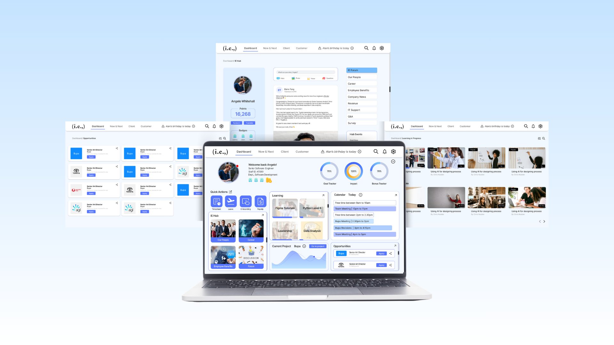

Designing a personalised workplace platform for visibility, recognition, and career growth.
PSP was a 6-week product design project exploring how an internal employee platform could better support visibility, motivation, and career growth across a growing organisation.
The initial brief was to design a dashboard for I.E. employees. But through research synthesis, competitor analysis, and usability testing, the opportunity became clearer: employees did not just need another place to access tools. They needed a more personalised workspace that helped them understand what to focus on, track their progress, access support, and feel recognised for their contribution.
The final concept reimagined PSP as an employee growth hub, bringing together project updates, calendar visibility, learning resources, HR access, performance indicators, and recognition features into one flexible dashboard experience.
I.E. employees needed to access information across multiple areas of work — projects, HR, learning, performance, communication, and internal opportunities. These needs were spread across different touchpoints, making it harder for employees to quickly understand:
The risk was designing a dashboard that simply displayed more information without helping employees make sense of it.
Employees had to move between disconnected touchpoints to understand work, growth, and support needs.
The design challenge became: how do we create an internal platform that feels useful enough to become part of an employee's everyday workflow?
The first instinct was to organise workplace tools into a cleaner dashboard. But the research pointed to a deeper need — employees did not just want access to information, they wanted clarity, relevance, and a stronger sense of progress.
The product direction shifted from organising tools to guiding employees through work, growth, and support.
This changed the design direction. Instead of treating every feature equally, we organised the experience around employee behaviour: what they need daily, what they review weekly, and what supports their long-term growth.
Due to limited access to I.E. employees during the project timeline, we used existing research provided by I.E. and supplemented it with interviews from employees working in similar organisational environments.
The goal was to understand how employees use internal tools, what information they need most often, and what makes workplace dashboards feel useful or ignored. We synthesised the research into recurring themes and used these insights to guide the dashboard structure, feature priority, and interaction model.
Research themes helped prioritise the dashboard structure and interaction model.
Based on the research, we structured PSP around three core areas — simplifying the mental model of the dashboard so employees weren't searching through disconnected sections, but guided by what they were trying to do.
The information architecture was simplified into three clear areas: Work, Growth, and Support.
The dashboard was designed around how often employees actually needed each piece of information — prioritising the interface so the most frequent actions appeared first, while lower-frequency resources were still easy to find.
The dashboard was structured around employee rhythms rather than department categories.
We built a mid-fidelity prototype in Figma to test the structure, navigation, and feature hierarchy. The focus at this stage wasn't final visual design — it was testing whether users understood the structure, could find key information, and saw value in the concept.
We tested the prototype with five participants over Zoom, who shared their screens while exploring the dashboard and completing key tasks. We observed how easily they could understand the homepage, find projects and calendar information, locate HR and learning resources, react to recognition features, and move between key sections — and asked how they'd arrange the dashboard around their own work habits.
The mid-fidelity prototype achieved a SUS score of 79, above the standard benchmark of 68 — suggesting strong usability potential at concept stage.
Based on testing, we made several refinements:
One early direction placed too much emphasis on gamification — badges, goal trackers, and achievement-based motivation as a prominent part of the dashboard. While some users found these features motivating, others felt they could create pressure or make the platform feel like a monitoring tool.
Testing showed that recognition should support employees without making them feel monitored.
Alongside the prototype, we began building a simple design system to support consistency and future scalability as new features and employee groups were added.
Reusable components created a foundation for future dashboard expansion.
The project resulted in a tested mid-fidelity prototype and a clearer product direction for PSP. Because the project was concept-stage, success was evaluated through usability testing, participant feedback, and the clarity of the product direction rather than live business performance.
Validated through 5-user usability testing and a SUS score of 79.
The concept evolved from a static dashboard into a personalised employee growth hub, tested, validated, and built to scale.
This project reinforced that dashboards shouldn't simply display information — a strong dashboard helps users understand what matters, what needs attention, and what action to take next.
It also showed that employee experience design requires care. Business visibility is important, but employees also need trust, flexibility, and control over how their progress is shown. The biggest learning was that motivation features only work when they feel supportive — recognition, goals, and progress indicators need to encourage employees without creating pressure or comparison.
The next step would be to test the prototype with actual I.E. employees across full-time, part-time, remote, and contract roles. Future improvements could include:
The long-term opportunity is to evolve PSP into a scalable internal platform that can support different employee types, workplace structures, and organisational needs.